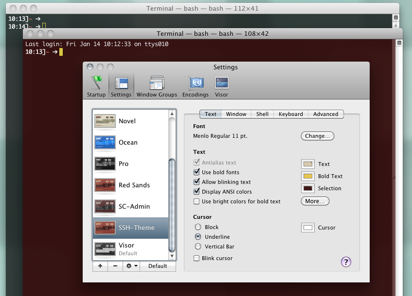
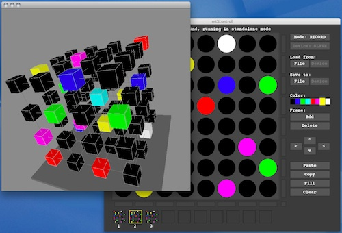
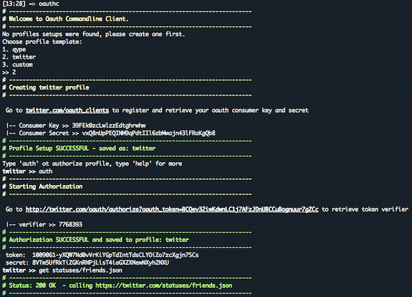

HowTo: ultra mega fast rails routes lookup

I was quite annoyed by the wasted time it took each time I grep the rails routes table.
Wait, can’t this be cached? – Sure it can!
So I came up this nice little alias to cache the output once:
alias route='CF=tmp/routes_cache; [[ ! -s $CF ]] && rake routes > $CF; cat $CF | grep '
now it’s ultra fast, try e.g.:
$ route root
bang!
HowTo: parse invalid, irregular HTML having < or unlcosed tags
I had the ‘problem’ that user feedback included lot of love – mostly by writing ‘hearts’. Unfortunately expressing hearts is done by ‘<3' which turns the input into invalid HTML. Bummer. So if you still want allow other basic tags, you have a problem. Here's how I solved it:
First I checked Stackoverflow – Tian had similar problem over there: Nokogiri: Parsing Irregular <
As a quick fix I came up with this method using a reqular expression to identify unclosed tags:
[code]
def fix_irregular_html(html)
regexp = /<([^<>]*)(<|$)/
#we need to do this multiple time as regex are overlapping
while (fixed_html = html.gsub(regexp, "<\\1\\2")) && fixed_html != html
html = fixed_html
end
fixed_html
end
[/code]
See full code including test here: https://gist.github.com/796571
It works out well for me, I appreciate any feedback and improvements
See full code and test here:
https://gist.github.com/796571
Mac OS X Terminal: visual indication for your ssh connection

Here’s a HowTo for a nice visual indication to see quickly if your Mac OS X Terminal is running which ssh connection.
The trick is to change your Terminal Theme before you ssh and change it back afterwards.
1. Create Theme:
got to Terminal -> Preferences -> Settings create a new theme (or copy existing one) and adjust to your needs, e.g. a light red background etc. Give it a nice name e.g. “SSH-Theme”
2. Add this function to your .bashrc
function tabc() {
NAME=$1; if [ -z "$NAME" ]; then NAME="Default"; fi
osascript -e "tell application \"Terminal\" to set current settings of front window to settings set \"$NAME\""
}
“Default” is my default Terminal theme, name this whatever u have
Usage:
tabc SSH-Theme #switch to theme with name
tabc #switch to default theme
3. Create alias to ssh to server:
alias sshmyserver="tabc SSH-Theme; ssh yourserver.com; tabc"
That’s it – your are done! Now, if you type sshmyserver, your Terminal color will change, ssh will start, and when you end ssh, everything will be back again..
Btw. for Terminal on Mac OS X, I very recommend Visor – a quake like console
UPDATE
That’s how you do it with iTerm:
function tabc() {
COLOR=$1; if [ -z "$COLOR" ]; then COLOR="{0, 7722, 9941}"; fi
osascript -e "tell application \"iTerm\" to set background color of current session of current terminal to $COLOR"
}
alias sshmyserver="tabc '{18000, 2500, 2500}'; ssh yourserver.com; tabc"
cubeXcontrol – a Rainbow Cube Editor

UPDATE:
Please express your Love and vote for cubeXControl here – Thanks!
UPDATE2:
Apparently the current Version doesn’t work with Windows. I’m very sorry for that, but at the moment I don’t have any Win machine to test this. So please feel free to try yourself and fix it! Thx!
I’m proud to present a first version which was on my this years TODO list for so long, but due to all the changes therefore very less time never got startet. But thanks to the Seeedstudio Rainbowduino Carnival 2010 I got a big motivation boost and found some time to get my fingers dirty again. So check this out, my this years contribution for the carnival:
cubeXcontrol – a Rainbow Cube Editor
Well, you know the mtXcontrol, the Rainbowduino Editor and the awesome Seeedstudio Rainbow Cube I mentioned here ? Now it’s time to bring them together:
[vimeo]http://vimeo.com/18300458[/vimeo]
cubeXcontrol is an editor to control and create patterns for the 4x4x4 RGB Rainbow Cube powered by a rainbowduino. It comes with an extra window showing a 3D model of the Cube, allowing to rotate in all directions and to zoom. Click on boxes to set the LED color easily.
The editor is of course heavily based on the latest mtXcontrol version, with the latest rainbowduino firmware. Both are unfortunately still in beta stage, but come with great new features like auto port detection.
Get the sources here:
https://github.com/rngtng/mtXcontrol/tree/cubeXcontrol
And the Rainbowduino driver:
https://github.com/rngtng/rainbowduino/tree/master_slave
Happy cub’ing!
AppleScript to create keyboard shortcuts
Last week my company laptop got stolen, so I had to setup my system again using this list. The positive part of each new system setup is you think more and more how to automate your setup..
This time I was really annoyed with setting up keyboard shortcuts, so I came up with this little AppleScript which does the work:
[gist id=652031 file=create_shortcuts.scpt]
The key is ‘GUI scripting’ – a specify way of AppleScript to simulate clicks, keystrokes etc. for *any* (native?) App. You only have to know the ids of the GUI elements which you can get with this very nice tool:
-> http://pfiddlesoft.com/uibrowser
Good source to start your Mac Os X Automation is:
-> http://www.macosxautomation.com
What? – irb extension gem to find your methods
[youtube]http://www.youtube.com/watch?v=2u3c5z45V8g[/youtube]
If Samuel just would have asked me, I got an answer:
Oldies, but Goldies: ‘Methodfinder’ is a really nice extension for your ruby/rails irb and shipped with the ‘what_methods’ gem. I’m using quite a lot and can’t go without it anymore (aka. I’m too stupid to remember all those method names ;-).
gem install what_methods
http://redhanded.hobix.com/inspect/stickItInYourIrbrcMethodfinder.html
See more hints by Dr. Nic blog here
mtXcontrol sneak preview – rainbowduino beta library goes master and slave
[vimeo]http://www.vimeo.com/10377543[/vimeo]
Now, as I’m finally getting settled, it’s time to kick of mtXcontrol development again. So first, I’ll continue working on the raw rainbowduino interaction which is the firmware, a communication protocol and a processing library, all summerized in the Processing library -Rainbowduino-. Current development going on, here, check it out. It’s still in a beta state, but ready and good for testing.
Just to make you curious here some new cool upcoming features:
* support for multiple & cascading Rainbowduinos
* auto port detection
* plug and play
* (auto) firmware upload
* Rainbow Cube support
* updated, more robust protocol
The video above show a quick preview of the upcoming Rainbowduino Firmware release ‘Master and Slave’.
You see two Rainbowduinos, the left one as Master connected via Serial to Mac, the right one as Slave connected via I2C to master. The blinking LEDs are merely debug output, interesting part is the changing brightness of the slave. The command to change brightness is send via Serial, received by the master and forwarded to the slave via I2C. With that multiple rainbowudinos can be connected in a row easily.
And the Best: both run the same(!!!) firmware. The master/slave role and I2C address are auto detected on startup. As easy as that!
Stay tuned!!

After having enjoyed a wonderful summer with lot of travels and being in more or less ‘offline’ mode, I’m back ‘online’ and I started my new Job at soundcloud.com.
It’s like Fickr but for Music – upload your tracks and share them among the community and fans.
It’s kick ass! 😉 Take a look around the office, check this out: http://www.wechsellook.com/post/read/90
Oauth-CLI – test your Twitter and other OAuth APIs easily

By the time I was working at Qype, I often had to deal with OAuth APIs. Doing example request works to a certain point quite good with a Plugin the for Firefox. But when it comes to Authorized or POST Request you’re stuck!
So I developed a tiny command line client, which allows you to send request easily. It comes as a gem and easily to install:
gem install oauth-cli
After installation, execute oauthc. You either make onetime calls, with giving all required data as parameter, or just go into interactive mode, to get a shell for multiple calls and history. For not stating all connection data over and over again, it comes with multiple profile support, a wizard to create those easily and presets for Twitter and Qype.
See this nifty example call:
oauthc -p twitter get statuses/friends.json
I hope you like it – Bug reports, suggestions, updates go to:
http://github.com/rngtng/oauth-cli/issues
See Readme:
http://github.com/rngtng/oauth-cli/blob/master/README.rdoc
See Source:
http://github.com/rngtng/oauth-cli
Skypehotdeploy – How to autocommit & deploy a file
At Qype we had the problem of a college sending me a file which needed to get into the development trunk and updated on the production system. Problem was, he had
http://gist.github.com/380749
Skype auto accept file,
folder action on download folder.
[plain]
my hotdeploy()
on adding folder items to this_folder after receiving these_items
my hotdeploy()
end adding folder items to
on hotdeploy()
set usr_home to “/Users/tobiasb/”
set prj_folder to usr_home & “Sites/qype_admin/”
set filename to “report_queries.yml”
set srcs to usr_home & “Downloads/” & filename
set dest to prj_folder & “config/” & filename
try
tell application “Finder” to set file_exists to exists srcs as POSIX file
if file_exists then
say “here we go”
do shell script “mv ” & srcs & ” ” & dest
set diff to do shell script “/opt/local/bin/svn diff ” & dest
if not diff is equal to “” then
#set commit to “/opt/local/bin/svn ci –quiet -m’SkypeAutoCommiter: updated report queries’ ” & dest & “;”
#set hotdeploy to “cd ” & prj_folder & “; /usr/bin/cap production qype:hotdeploy FILES=config/” & filename & “;”
#set out to commit & hotdeploy
set out to do shell script “/Users/tobiasb/bin/update_report_queries.sh”
my message(“done”)
say “done”
else
my message(“no changes”)
end if
else
return “no file”
end if
on error the error_message number the error_number
my message(“error”)
say “error”
set the error_text to “Error: ” & the error_number & “. ” & the error_message
display dialog the error_text buttons {“OK”} default button 1
return the error_text
end try
end hotdeploy
on message(msg)
tell application “Skype” to send command “MESSAGE justalii SkypeAutoCommiter: ” & msg script name “to Alli”
#say msg
end message
[/plain]